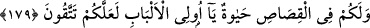

üstünlük iddiası muteber değildir. O halde köleye karşılık hür ve kâfire karşılık mü’min
bir kimse öldürülebilir.
İmam Mâlik ve İmam Şâfiî ise köleye karşı hür bir kimsenin, kâfire karşılık da
mü’minin öldürülemeyeceğini söylemişlerdir. Nitekim İmam Şâfiî şöyle demiştir:
İşte ceylân, benim intikamımı alınız. Çünkü o,
Kasden iki gözünün oklarını bana çevirdi.
Onu öldürmeyin, zira ben onun kölesiyim.
Benim inancıma göre köleye karşılık hür öldürülmez.
Cânîyi (suçluyu) affetmek, işlediği suçun cezâsını ondan kaldırmak demektir. Buradaki
söz konusu suçun cezâsı ise kısastır. Âyette sanki şöyle denilmiştir: Maktûlün velîsi
tarafından suçu affedilen katilin, ister öldürdüğü kimsenin bütün yakınlarıyla, isterse bir
kısmıyla anlaşmaya varsın, her iki halde de diyet ödemesi vâcibtir. Fakat kısas cezâsı
düşer. Çünkü İbn Abbas (r.a.)’dan rivâyet edilen bir habere göre bu âyet-i kerîme, mal
ile kısas suçunun düşürülmesi husûsunda anlaşma yapma hakkında indirilmiştir. Allah
Teâlâ, İslâm kardeşliğinin aralarında mevcûd olduğunu, katilin îmândan çıkmadığını
belirtmek ve iki tarafı birbirine karşı yumuşak davranmaya teşvik etmek için, maktûlün
velîsini katilin kardeşi olarak isimlendirmiştir.
Böyle bir af söz konusu olup kısas düşünce, maktûlün velîsinin katilden, anlaşmanın
bedelini iyilikle talep etmesi, bu konuda şiddet ve dayatmadan vazgeçmesi ve diyeti
alırken de vâcib olan miktardan daha fazlasını istememesi gerekir. Buna karşılık katilin
de, diyeti bekletmeden eksiksiz ve cezâsız olarak teslim etmesi lazımdır.
İşte af ve diyeti ihtiva eden bu hüküm, sadece af ve diyetle kalmayıp sizi kısas, diyet
ve affetme arasında muhayyer bırakması bakımından Rabbinizden sizin için bir kolaylık,
genişlik ve rahmettir. Mûsâ (a.s.) şerîatinde adâletin tahakkuku için sadece kısas vardı.
Îsâ (a.s.)’ın dîninde, fazîletli olanla amel etme bakımından sadece af vardı. Bizim
dînimizde ise katili cezâlandırmak isteyince kısas, maktûlün velîsini nimete boğup
genişlik ve refaha kavuşturmak isteyince diyet, öldürene acıyıp ona ikramda bulunmak
istenince af söz konusudur.
Bu hafifletmeden sonra, katilden başkasını öldürmek ve afvettikten veya diyetini
aldıktan sonra katili öldürmek sûretiyle şerîatın koyduğu sınırı tecâvüz edenlere elem
verici bir azâb vardır.
Cahiliye döneminde, öldürülen kimsenin velîsi, diyeti kabûl ederek katile emân verir,
sonra da fırsatını bulup onu öldürür ve malını kendi yakınlarına geri verirdi. Âyet-i
kerîme bunu yasaklamış ve böyle davrananların dünyâda kısas ile âhırette de ateş ile
cezalandırılacaklarını belirtmiştir.